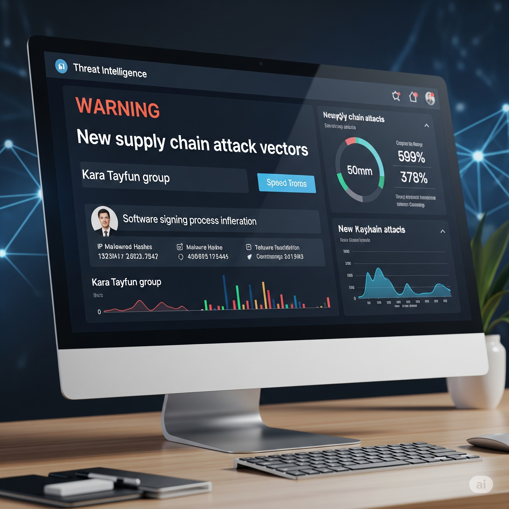

Hoş geldiniz, Siber Tehdit İstihbaratı (CTI) Uzmanı! Bugün şirketiniz **ÇOLHAK Teknoloji**'yi saran, küresel bir tedarik zinciri felaketiyle yüzleşeceksiniz. Gizli kapılar, sızan veriler ve sarsılan müşteri güveni... Bu simülasyonda, sadece teknik sorunları çözmekle kalmayacak, aynı zamanda stratejik istihbaratın gücünü kullanarak karmaşık bir siber savaşı yönetecek ve şirketin kaderini belirleyeceksiniz. Hazır mısınız?
Simülasyon Rolleri
Sizin Rolünüz: CTI Uzmanı
Siber tehdit istihbaratını toplamak, analiz etmek, yorumlamak ve kriz ekibine rehberlik etmekle sorumlusunuz. Seçimleriniz sonucu doğrudan etkileyecektir.
CEO Elara Yılmaz Şirketin genel iş sürekliliği ve kamuoyu algısına odaklanmış durumda.
CSO Can Demir Siber güvenlik operasyonlarından ve savunma stratejilerinden sorumlu.
Hukuk Müşaviri Zeynep Kaya Hukuki uyumluluğu denetler ve yasal riskleri azaltmak için danışmanlık yapar.
Operasyon Direktörü Levent Akın Müşteri hizmetleri ve iş sürekliliği konusunda endişeli.
Tedarikçi İlişkileri Yöneticisi Dr. Aylin Güneş Tedarikçilerle ilişkileri yönetiyor ve onların güvenilirliğini değerlendiriyor.
Temel Metrikler
Etkilenen Sistemler Saldırıdan etkilenen sistem sayısı. (Başlangıç: 0)
Finansal Zarar Krizin şirkete maliyeti. (Başlangıç: ₺0)
Veri Sızıntısı Şirket dışına sızan veri yüzdesi. (Başlangıç: 0%)
İtibar Puanı Şirketinizin kamuoyu ve sektördeki imajı. (Başlangıç: 100)
Karar Etkileri
Stratejik Değerlendirme
Etkilenen Sistem
0
Finansal Zarar
₺0
Veri Sızıntısı
0%
İtibar Puanı
100
Gün 1: İlk Sinyaller ve Fısıltılar
Sabah 08:30 - Kahve ve Kötü Bir His
Sabah rutinini yaparken, özel CTI kanallarından birinde ani bir hareketlilik fark ettiniz. Genellikle sızıntı istihbaratı paylaşan bir dark web forumunda, ÇOLHAK'ın kritik tedarikçilerinden Smart Teknoloji ile ilgili şifreli bir gönderi belirdi. Smart Teknoloji, Çolhak'a temel yazılım altyapısı sağlıyor.
Gönderi, Temel yazılım altyapısının "gizli bir kapıya" sahip olabileceğine dair belirsiz ama endişe verici imalar içeriyor. Henüz bir kanıt yok, sadece bir fısıltı.
CTI Uzmanı olarak ilk adımın ne olacak?
Öğrenme Notu: Siber krizin ilk anları kritik öneme sahiptir. İlk tepkiniz, krizin seyrini büyük ölçüde etkileyebilir. Bilgi paylaşımı ve doğrulama arasında denge kurmak önemlidir.
Gün 1: Öğleden Sonra - Onaylanmayan Şüpheler
Öğleden Sonra 15:00 - Sektör Alarmı
Sektör lideri bir siber güvenlik araştırma firması olan "Tehdit Analiz Laboratuvarı" (TAL), "Kara Tayfun" grubunun tedarik zinciri saldırılarında yeni bir vektör kullandığına dair bir uyarı yayınladı. Uyarıda, spesifik olarak yazılım imzalama süreçlerine sızıldığı ve meşru yazılımlara gizlice kötü amaçlı kod eklendiği belirtiliyor. Henüz ÇOLHAK veya Smart Teknoloji'den bahsedilmiyor, ancak temel yazılım altyapısının yapısına dair teknik detaylarla şaşırtıcı benzerlikler var.

CTI Uzmanı olarak hangi adımı atacaksın?
Öğrenme Notu: Kriz anlarında doğru önceliklendirme, kaynakların verimli kullanılması için hayati öneme sahiptir. Teknik müdahale, iş birliği ve yasal hazırlık arasındaki dengeyi iyi kurmalısın.
Gün 2: Krizin Patlak Vermesi
Sabah 09:30 - Felaket Senaryosu Gerçekleşiyor!
Birkaç kritik ÇOLHAK müşterisi (büyük bir finans kurumu ve bir enerji dağıtım şebekesi), temel yazılım altyapısının son güncellemesi sonrasında kimlik doğrulama sistemlerinde anormal davranışlar rapor etmeye başladı. Kullanıcı hesaplarında rastgele kilitlenmeler, yetkisiz erişim denemeleri ve beklenmedik log hareketleri tespit ediliyor.
CSO Can Demir'den panik içinde bir çağrı aldınız: "Smart Teknoloji'nin temel yazılım altyapısından gelen telemetri verilerinde, daha önce bahsettiğin yazılım imzalama anormallikleriyle eşleşen imzalar bulduk. Sanırım Kara Tayfun içeride!"
Kriz ekibine acil olarak hangi CTI temelli öneride bulunursun?
Öğrenme Notu: Bir saldırı kesinleştiğinde, hız ve doğru müdahale kritik öneme sahiptir. Kararlarının hem teknik hem de operasyonel sonuçları olacaktır.
Gün 2: Öğleden Sonra - Derinlemesine Soruşturma ve Kök Neden Analizi
Öğleden Sonra 14:00 - Kara Kutuya Bakış
Kara Tayfun'un Smart Teknoloji yazılımına nasıl sızdığına dair ilk bulgular ortaya çıkmaya başladı. İlk tersine mühendislik analizleri, kötü amaçlı kodun sadece bir arka kapı olmadığını, aynı zamanda belirli bir tedarik zinciri bileşenini hedef aldığını gösteriyor: SynapseTech'in açık kaynaklı kütüphanelerinden biri. Bu kütüphane, Smart Teknoloji'nin temel yazılım altyapısının bir parçası.
Ayrıca, dark web'deki istihbarat kanallarınızda "SynapseTech" ve "tedarik zinciri zafiyeti" anahtar kelimeleriyle ilgili yeni, şifreli mesajlar dolaşmaya başladı. Bu mesajlar, başka siber suç gruplarının da bu zafiyeti kendi çıkarları için kullanmaya çalıştığına işaret ediyor olabilir.
CTI Uzmanı olarak bir sonraki kritik adımın ne olacak?
Öğrenme Notu: Kök neden analizi, gelecekteki saldırıları önlemek için kritik öneme sahiptir. Aynı zamanda, yasal ve halkla ilişkiler boyutunda atılacak adımlar, krizin genel algısını etkiler.
Gün 3: Sabah - Hasar Kontrol ve İletişim
Sabah 09:30 - Sıkışan Zaman
Temel yazılım altyapısındaki arka kapı ve SynapseTech zafiyeti nedeniyle, Kara Tayfun'un müşterilerinizin ağlarına derinlemesine sızdığı ve veri sızıntıları yaşandığı kesinleşti. Medyada haberler çığ gibi büyüyor: "ÇOLHAK Teknoloji ve Tedarikçisi Arasındaki Kriz Derinleşiyor!" Kamuoyu şirketinizden net bir açıklama bekliyor.
Halka ve paydaşlara nasıl bir açıklama yapacaksın?
Öğrenme Notu: Kriz iletişimi, itibar yönetiminin bel kemiğidir. Şeffaflık, güven, sorumluluk ve yasal yükümlülükler arasında hassas bir denge kurmalısın.
Gün 3: Öğleden Sonra - Uzun Vadeli Strateji ve İyileşme
Öğleden Sonra 14:00 - Yaraları Sarma Zamanı
Saldırının nedenleri ve kapsamı artık büyük ölçüde netleşti. Şirketinizin gelecekteki siber dayanıklılığı için önemli kararlar almanız gerekiyor. CEO Elara Yılmaz ve CSO Can Demir, şirket içi güvenlik protokollerinin ve tedarikçi denetimlerinin acilen gözden geçirilmesi gerektiğini belirtiyor. Hukuk Müşaviri Zeynep Kaya ise potansiyel davalara karşı yasal savunma stratejileri üzerinde çalışıyor. Finansal kayıplar artmaya devam ediyor.
Şirketinizin gelecekteki siber dayanıklılığı için hangi uzun vadeli stratejiyi önerirsin?
Öğrenme Notu: Bir krizin ardından alınan uzun vadeli kararlar, şirketin sadece kısa vadeli iyileşmesini değil, aynı zamanda gelecekteki dayanıklılığını ve itibarını da belirler.
Kriz Sonrası Değerlendirme Raporu
Simülasyon tamamlandı. Kriz yönetimi performansınızın detaylı dökümü aşağıdadır.